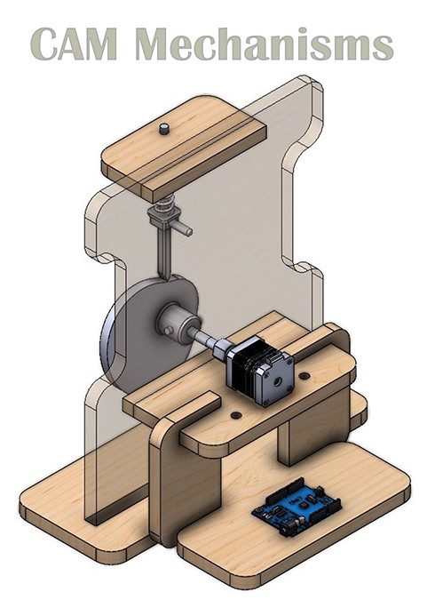

CAM Mechanisms
CAM Mechanisms: Technical Overview and Specific Profiles
Definition
A CAM mechanism is a mechanical system typically consisting of two main components: a CAM and a follower. The CAM is a rotating or oscillating element with a specifically profiled (shaped) surface. The follower is an element that is in direct contact with the CAM's profile. As the CAM rotates or oscillates, its profiled surface imparts a predetermined, often complex, reciprocating or oscillating motion to the follower.
Primary Technical Function
The primary function of a CAM mechanism is to convert a continuous rotary (or less commonly, oscillatory) input motion of the CAM into a discontinuous, specific, and often non-uniform reciprocating or oscillating output motion of the follower. The shape of the CAM profile dictates the exact motion characteristics (displacement, velocity, and acceleration) of the follower.
Specific CAM Profiles You Are Using
You are utilizing four distinct types of CAMs:
Description: An eccentric CAM is essentially a circular disk where the axis of rotation is offset from the geometric center of the disk.
Follower Motion: It produces a smooth, simple harmonic motion (or close to it, depending on follower type and arrangement) in the follower. The stroke (total travel) of the follower is twice the eccentricity (the distance between the axis of rotation and the geometric center).
Characteristics: Simple to design and manufacture. Provides a continuous rise and fall.
Description: This CAM has a heart-shaped profile.
Follower Motion: It is designed to provide a period of (near) constant velocity to the follower during a significant portion of its rise and fall, followed by periods of acceleration and deceleration.
Characteristics: Useful when a uniform rate of follower movement is required for a part of the cycle. The "point" of the heart often corresponds to a dwell period (no follower motion) or a rapid change in direction.
Description: As the name suggests, this CAM has a profile resembling a pear.
Follower Motion: Typically provides a long dwell period (follower remains stationary) for a significant portion of the CAM's rotation, followed by a gradual rise, a shorter dwell (or no dwell) at the top, and then a gradual fall back to the initial dwell position.
Characteristics: Suitable for applications requiring the follower to remain stationary for extended periods and then move with relatively slow, smooth acceleration.
Description: This CAM features a profile that gradually lifts the follower over a significant portion of its rotation, followed by a sudden, sharp drop-off section.
Follower Motion: Provides a slow, controlled rise of the follower and then a rapid return (drop) over a very small angle of CAM rotation.
Characteristics: Used when a quick return or quick action is needed after a slower working stroke. The "drop" is often radial or near-radial on the CAM profile.
CAM System in the Kit
[Placeholder: Describe the specific CAM profiles (Eccentric, Heart, Pear, Snail Drop) and follower type available in your kit. Explain how they are interchanged and how follower motion can be observed or measured.]
